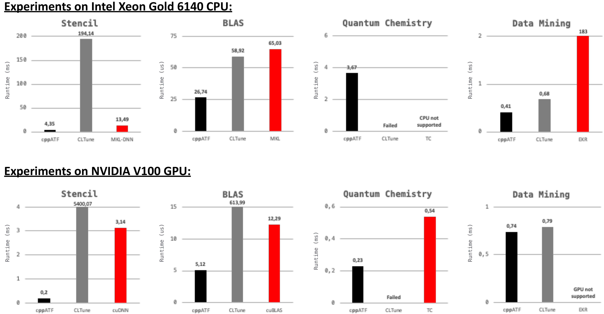

Getting Started¶
Building¶
Dependencies¶
C++ Compiler supporting at least C++14 (tested with GCC 9.3.0)
Optional: OpenCL SDK (only required when using cppATF’s pre-implemented cost function for auto-tuning OpenCL programs)
Optional: CUDA Toolkit (only required when using cppATF’s pre-implemented cost function for auto-tuning CUDA programs)
Build steps¶
cppATF is used as an easy-to-use C++ header-only library: the user clones this repository and includes the cppATF’s cppatf.hpp header file in its C++ program.
cppATF can be optionally configured by defining one or more of the following macros before including the cppatf.hpp header file:
#define PARALLEL_SEARCH_SPACE_GENERATION: parallelizes search space generation (only required when search space generation takes too much time); may require using the C++ compiler with a parallelization flag (e.g.,-pthread)#define ENABLE_CUDA_COST_FUNCTION: enables using cppATF’s pre-implemented CUDA cost function#define ENABLE_OPENCL_COST_FUNCTION: enables using cppATF’s pre-implemented OpenCL cost function
Example Usage¶
We illustrate the basic usage of cppATF by auto-tuning the saxpy OpenCL kernel of the CLBlast library, based on cppATF’s GPL-based C++ user interface.
The kernel is implemented in CLBlast as follows:
__kernel void saxpy( const int N, const float a, const __global float* x, __global float* y )
{
for( int w = 0 ; w < WPT ; ++w )
{
const int index = w * get_global_size(0) + get_global_id(0);
y[ index ] += a * x[ index ];
}
}
It takes as inputs: the input size N, a floating point number a, and two N-sized vectors x and y of floating point numbers.
The kernel computes for all \(i\in[1,\texttt{N}]_\mathbb{N}\):
y[ i ] = a * x[ i ] + y[ i ]
For simplicity, we removed in the kernel switching between single and double precision floating point numbers, as well as using OpenCL’s vector data types.
To auto-tune a program with cppATF, the programmer has to perform three steps, as briefly outlined in the following.
The complete cppATF code for saxpy is available here.
Step 1: Generate the Search Space¶
cppATF automatically generates the search space for the user. For this, the user describes the space using tuning parameters, which are in this example:
WPT(Work Per Thread) – asize_tparameter in the interval \([1,\texttt{N}]_\mathbb{N}\) that has to divide the input sizeN:
auto WPT = atf::tuning_parameter( "WPT", atf::interval<size_t>( 1,N ), atf::divides(N) );
LS(Local Size) – asize_tparameter in the interval \([1,\texttt{N}]_\mathbb{N}\) that has to divide the global sizeN/WPT:
auto LS = atf::tuning_parameter( "LS", atf::interval<size_t>( 1,N ), atf::divides(N/WPT) );
The cppATF user can set arbitrary constraints on tuning parameters.
For this, cppATF allows using any arbitrary, user-defined C++ callable (e.g., a C++ lambda expression) as constraint function that takes as input a value within tuning parameter’s range and returns either true (iff the constraint is satisfied) or false (iff the constraint is not satisfied).
In this example, both tuning parameters use as constraints the cppATF’s pre-implemented divides constraint function.
cppATF currently provides the following, pre-implemented constraint functions:
dividesis_multiple_ofless_thangreater_thanequalunequal
To express complex constraints conveniently, constraint functions in cppATF (including the cppATF’s pre-implemented constraints) can be arbitrarily combined via logical operators && and ||.
Interdependencies among tuning parameters are expressed in cppATF via constraints.
For this, the constraint function is defined based on tuning parameters (which are used in the constraint’s function definition as variables of their corresponding range type, e.g., type int when tuning parameter’s range consists of integers).
For example, the constraint function of parameter LS uses WPT in its definition to express that parameter LS has to divide the global size N/WPT.
cppATF’s parameter constraints are described in detail here.
Step 2: Implement a Cost Function¶
For high flexibility, the cppATF user can use any arbitrary, self-implemented cost function.
cppATF allows as cost function any arbitrary C++ callable that takes as input a configuration of tuning parameters and returns a value for which operator < is defined, e.g., size_t.
cppATF interprets the cost function’s return value (e.g., program’s runtime) as the cost that has to be minimized during the auto-tuning process.
For user’s convenience, cppATF provides pre-implemented cost functions for auto-tuning OpenCL and CUDA kernels in terms of runtime performance, because minimizing the runtime of OpenCL and CUDA applications is becoming increasingly important in the autotuning community.
For our saxpy example, we use cppATF’s pre-implemented OpenCL cost function atf::opencl, as follows:
auto saxpy_kernel = atf::opencl::kernel< atf::scalar<int> , // N
atf::scalar<float> , // a
atf::buffer<float> , // x
atf::buffer<float> > // y
( saxpy_kernel_as_string, "saxpy" ); // kernel's code & name
auto cf_saxpy = atf::opencl::cost_function( saxpy_kernel ).platform_id( 0 ) // OpenCL platform id
.device_id( 0 ) // OpenCL device id
.inputs( atf::scalar<int>( N ) , // N
atf::scalar<float>() , // a
atf::buffer<float>( N ) , // x
atf::buffer<float>( N ) ) // y
.global_size( N/WPT ) // OpenCL global size
.local_size( LS ); // OpenCL local size
We first define the kernel straightforwardly as an cppATF OpenCL kernel object atf::opencl::kernel.
Afterwards, we construct an cppATF OpenCL cost function object of type atf::opencl::cost_function, which we customize with:
target device’s OpenCL platform and device id; alternatively, the cppATF user can chose a device by its platform and device name, e.g.,
platform_name("NVIDIA")anddevice_name("V100"), or based on its properties (e.g., the system’s first found GPU, etc);the kernel’s inputs, which are in this example: the input size
N, a random floating point number forathat is automatically generated by cppATF (random data is the default input in auto-tuning), and twoN-sized buffers forxandythat are also filled with random floating point numbers; cppATF uses per default random data in the range \((0,1]_\mathbb{R}\) for floating point numbers and in range \([1,10]_\mathbb{N}\) for integers; user-defined ranges \((\texttt{min},\texttt{max}]_\mathbb{R}\) (floating point range) or \([\texttt{min},\texttt{max}]_\mathbb{N}\) (integer range) can be set via an optional argument:atf::scalar<T>( {min,max} )oratf::buffer<T>( N, {min,max} ), respectively;the OpenCL global and local size, which we chose as:
N/WPT(global size) andLS(local size) – cppATF allows defining both sizes as arbitrary, arithmetic C++ expressions which may contain tuning parameters for high experessivity.
Correctness can be optionally validated in cppATF via function check_result<i>( gold_value ) which checks the i-th buffer against an std::vector gold_value.
Alternatively, the user can use instead of parameter gold_value a C++ callable gold_function (e.g., a lambda expression) that implements the computation of gold (e.g., when random data is used), as demonstrated here.
Step 3: Explore the Search Space¶
The cppATF user explores the search space by creating an cppATF tuner object and customizing it with the tuning parameters and a search technique:
auto tuning_result = atf::tuner().tuning_parameters( WPT, LS )
.search_technique( atf::auc_bandit() )
.tune( cf_saxpy , atf::evaluations(50) );
The tuning is started via function tune which takes as input the cost function (from Step 2) and an abort condition (in this example, testing 50 configurations).
cppATF then automatically explores the search space and returns object tuning_result which contains: the best found configuration of tuning parameters, the cost of that configuration, etc.
To reduce tuning time, cppATF allows exploiting actual program computations also for the exploration phase, by allowing the user program to explicitly guide the exploration process.
This is in particular beneficial for iterative applications, where the code part to tune is called repeatedly in the program flow, allowing benefitting from the calls also for exploration.
For this, cppATF provides function make_step which is used as an alternative to function tune, as demonstrated here.
Search Techniques¶
cppATF currently provides the following, pre-implemented search techniques:
Basic Search Techniques:
exhaustiverandomsimulated_annealingdifferential_evolutionparticle_swarmpattern_searchtorczon
Meta Search Techniques:
round_robinauc_bandit(recommended as default)
Further techniques can be easily added to cppATF by implementing a straightforward interface.
Abort Conditions¶
cppATF currently provides the following, pre-implemented abort conditions:
duration<D>(t): stops exploration after a user-defined time intervalt; here,Dis anstd::chrono::durationand sets the time unit:seconds,minutes, etc.;evaluations(n): stops afterntested configurations;fraction(f): stops afterf*Stested configurations, wherefis a floating point number in[0,1]andSthe search space size;cost(c): stops when a configuration with a cost<=chas been found;speedup<D>(s,t): stops when within the last time intervaltthe cost could not be lowered by a factor>=s;speedup(s,n): stops when within the lastntested configurations the cost could not be lowered by a factor>=s.
If no abort condition is set, cppATF uses evaluations(S), where S is the search space size.
To meet complex user requirements, abort conditions can be combined by using the logical operators && and ||.
New abort conditions can be easily added to cppATF by implementing the corresponding interface.
Experimental Results¶
We present experimental results (discussed in detail here) for MDH-based auto-tunable computations from popular domains: Stencil, BLAS (Basic Linear Algebra Subroutines), Quantum Chemistry, and Data Mining. In particular, we show that cppATF is able to auto-tune the computations to higher performance than CLTune which is an auto-tuning approach that also supports interdependencies among tuning parameters:

The figure shows runtimes (lower is better) of implementations on CPU (top part of the figure) and GPU (bottom part) when auto-tuned with cppATF (black bars) as compared to auto-tuning the implementations using CLTune (gray bars). We also compare to well-performing high-performance libraries which are often optimized by hand (red bars): MKL-DNN v0.21.5, MKL v2020, cuDNN v7.6.5, cuBLAS v10.2., Tensor Comprehensions (TC), and EKR.
Citations¶
Please use the following citation, when referring to ATF’s:
Internal Design & Implementation
@article{10.1145/3427093,
author = {Rasch, Ari and Schulze, Richard and Steuwer, Michel and Gorlatch, Sergei},
title = {Efficient Auto-Tuning of Parallel Programs with Interdependent Tuning Parameters via Auto-Tuning Framework (ATF)},
year = {2021},
issue_date = {March 2021},
publisher = {Association for Computing Machinery},
address = {New York, NY, USA},
volume = {18},
number = {1},
issn = {1544-3566},
url = {https://doi.org/10.1145/3427093},
doi = {10.1145/3427093},
journal = {ACM Trans. Archit. Code Optim.},
month = {jan},
articleno = {1},
numpages = {26},
keywords = {parallel programs, Auto-tuning, interdependent tuning parameters}
}
DSL-Based Interface
@article{https://doi.org/10.1002/cpe.4423,
author = {Rasch, Ari and Gorlatch, Sergei},
title = {ATF: A generic directive-based auto-tuning framework},
journal = {Concurrency and Computation: Practice and Experience},
volume = {31},
number = {5},
pages = {e4423},
keywords = {auto-tuning, CLBlast, CLTune, CUDA, dependent tuning parameters, GEMM, many-core, multi-core, multi-objective auto-tuning, OpenCL, OpenTuner, tuning parameter constraints},
doi = {https://doi.org/10.1002/cpe.4423},
url = {https://onlinelibrary.wiley.com/doi/abs/10.1002/cpe.4423},
eprint = {https://onlinelibrary.wiley.com/doi/pdf/10.1002/cpe.4423},
note = {e4423 cpe.4423},
year = {2019}
}
GPL-Based:
C++ Interface
@INPROCEEDINGS{8291912,
author={Rasch, Ari and Haidl, Michael and Gorlatch, Sergei},
booktitle={2017 IEEE 19th International Conference on High Performance Computing and Communications; IEEE 15th International Conference on Smart City; IEEE 3rd International Conference on Data Science and Systems (HPCC/SmartCity/DSS)},
title={ATF: A Generic Auto-Tuning Framework},
year={2017},
volume={},
number={},
pages={64-71},
doi={10.1109/HPCC-SmartCity-DSS.2017.9}
}
Python Interface
Comming soon!